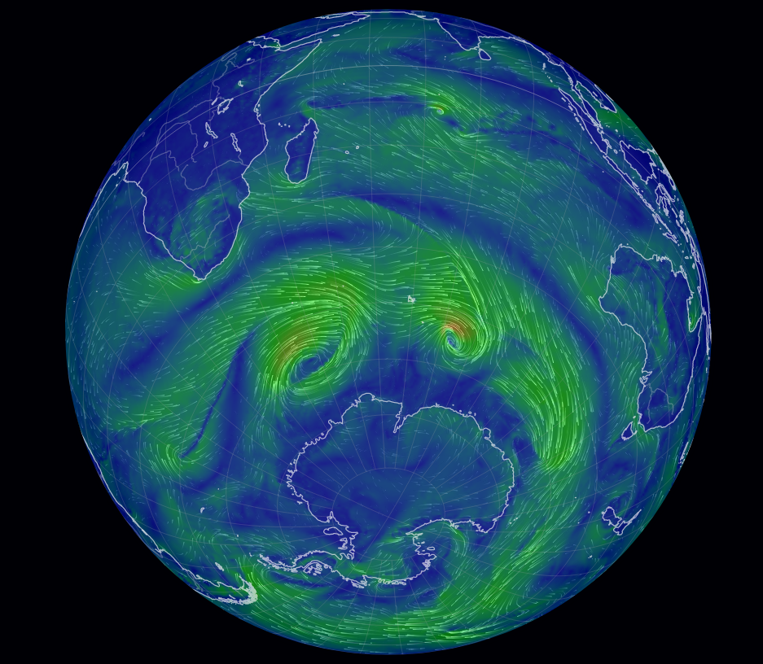

Hi, My name is Oindrila. I am currently an institute post-doctoral researcher at ATMOS lab at Indian Institute of Technology (IIT) Kharagpur under the supervision of Dr. Jayanarayanan Kuttippurath.
I completed my PhD in Meteorology and Oceanography from National Atmospheric Research Laboratory (NARL), ISRO, Department of Space, Govt. of India where I studied Tropospheric trace gas chemistry during SSW events.